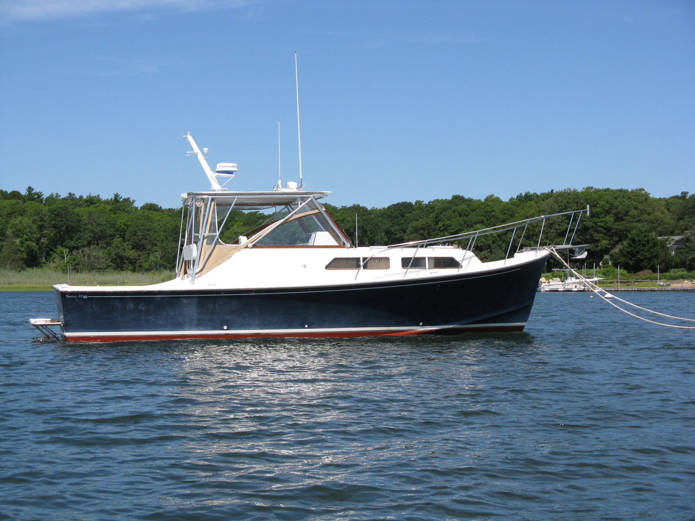

B-Atlas Boat Guide · FORT-33
Fortier 33 Downeast Cruiser
From 1980
The Fortier 33 is a New England Downeast/bass-boat cruiser based on Eldridge-McInnis design principles, with a molded keel, low profile and diesel inboard propulsion. Fortier emphasizes robust construction, fishing utility and efficient coastal performance rather than maximum interior volume.

- LOA
- 33.5 ft
- LWL
- 30 ft
- Beam
- 11.67 ft
- Draft
- 2.67 ft
- Hull behaviour
- Semi-Displacement
- Fuel
- Diesel
- Propulsion
- Shaft
- Engine configuration
- Twin diesel inboards standard; IPS offered on later builds
- Boat family
- Downeast
- Construction
- Fiberglass
Best for
- Coastal cruisers who value cockpit space and classic New England design
- Fishing/cruising owners wanting conventional inboard machinery
- Buyers prioritizing build quality over maximum interior volume
Trade-offs
- Lower cabin volume than taller production cruisers of similar length
- Traditional low-profile layout prioritizes cockpit and seakeeping over multiple private cabins
- Customization means equipment still varies between individual boats
Known concerns
- No model-specific concern has been promoted to B-Atlas’s evidence threshold. This does not mean the model has no age-, condition- or hull-specific risks.
Inspection focus
- Inspect foam-cored hull/deck around penetrations and hardware
- Inspect engine room, exhaust, cooling, shaft and rudder systems
- Verify custom options and later modifications
- Inspect cockpit sole, scuppers and deck drainage
- Confirm actual tankage and machinery package
Continue researching
Related boat models
Fortier 26 Bass Boat / Downeast Cruiser
26.9 ft · Semi-Displacement
Mainship 30 Pilot
33.08 ft · Semi-Displacement
Back Cove 30 Downeast Cruiser
34.17 ft · Planing
Cape Dory 33 Flybridge
32.83 ft · Planing
True North 34 Original Diesel / Inboard
34.33 ft · Planing
Back Cove 33 Downeast Cruiser
34.67 ft · Planing
About this record
B-Atlas preserves uncertainty: missing information remains unknown rather than being treated as a negative. Specifications and guidance describe the model record; individual boats can differ by year, equipment, refit and condition.